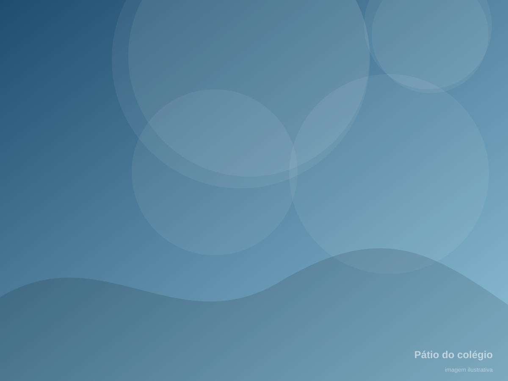
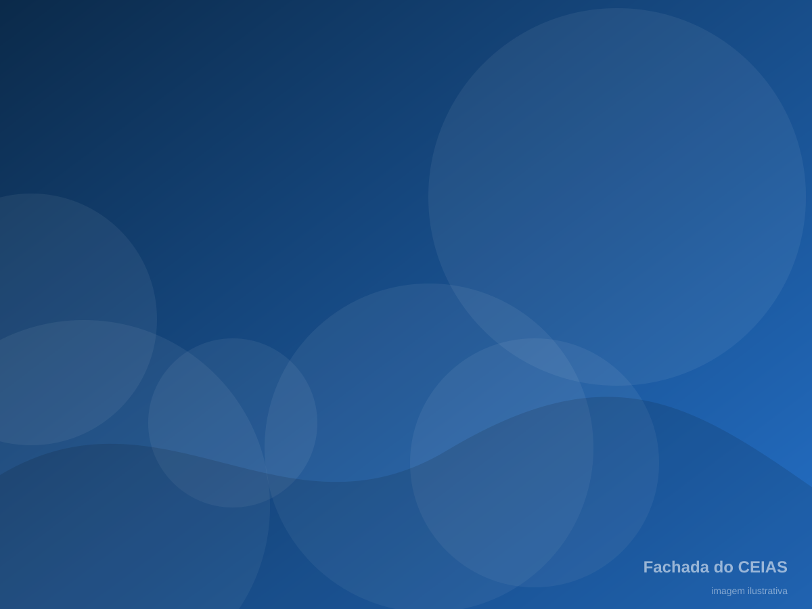
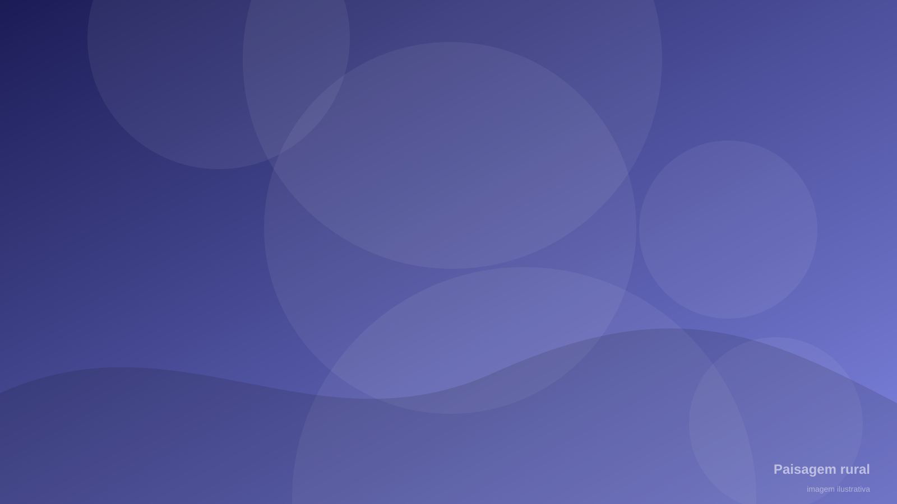
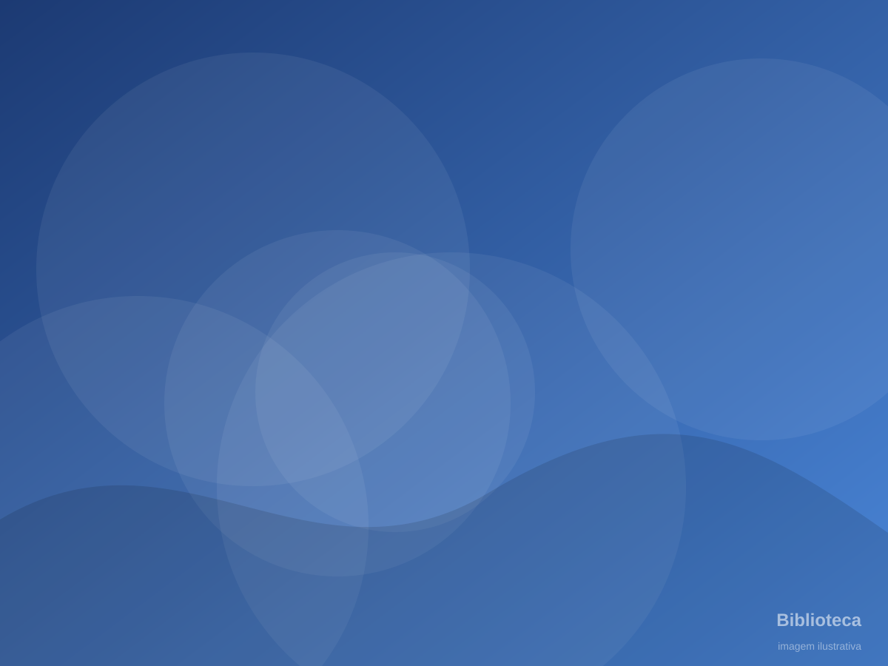

Sobre o colégio
Uma escola com história, identidade e futuro, no coração da Colônia Marcelino.
Colégio Estadual do Campo Irmã Ambrósia Sabatovich
Ensino Fundamental (Anos Finais) e Ensino Médio, além de EJA e Classe Especial, na Colônia Marcelino, em São José dos Pinhais – PR.
O CEIAS integra a rede estadual de ensino do Paraná e é classificado como Escola do Campo. Isso significa que seu projeto pedagógico parte da realidade rural, valoriza os saberes da comunidade e reconhece a cultura local como ponto de partida para o conhecimento.
A escola carrega o nome de Irmã Ambrósia Sabatovich, religiosa ucraniana que dedicou a vida à educação e ao cuidado da comunidade, e cujo exemplo inspira o trabalho de professores, estudantes e famílias.
- Código INEP
- Escola do Campo
- Rede Estadual — SEED/PR
- São José dos Pinhais – PR

Nosso brasão
O brasão do CEIAS reúne, em azul institucional e dourado, os símbolos que definem a escola.
- Sol nascente
O futuro dos estudantes e a esperança que a educação renova a cada dia.
- Livro aberto
O conhecimento, a leitura e o compromisso com o ensino público de qualidade.
- Espigas
A identidade de Escola do Campo e o trabalho das famílias da Colônia Marcelino.
- Escudo
A proteção e o cuidado — legado de Irmã Ambrósia, que deu a vida para proteger uma jovem.
O que nos move
Missão
Oferecer educação pública de qualidade, comprometida com a realidade do campo, formando estudantes críticos, solidários e preparados para o futuro.
Visão
Ser referência em Educação do Campo, reconhecida pela integração entre escola, comunidade, cultura e tecnologia.
Valores
Respeito, pertencimento, solidariedade, valorização da cultura local, compromisso com o conhecimento e cuidado com as pessoas e com a terra.
Uma narrativa que conecta gerações
Passado — o legado
A história de Irmã Ambrósia e das famílias imigrantes que formaram a Colônia Marcelino é a raiz da nossa identidade.
Nossa históriaPresente — os estudantes
474 estudantes que aprendem, criam, pesquisam e representam a comunidade em projetos, competições e apresentações.
Nossos projetosFuturo — a educação
Uma formação que abre caminhos: ensino superior, trabalho, cidadania e permanência qualificada no campo.
Nosso ensinoConheça mais sobre o CEIAS

Nossa história
A trajetória de Irmã Ambrósia e a formação da comunidade.

Educação do Campo
A identidade pedagógica que orienta o colégio.

Infraestrutura
Biblioteca, laboratórios, quadra coberta e tecnologia.
Nossa equipe
Professores e profissionais que fazem a escola acontecer.
Nossa cultura
As raízes ucranianas e as tradições da Colônia Marcelino.

Fale conosco
Localização, contatos e formulário de atendimento.